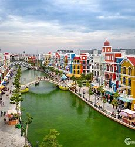
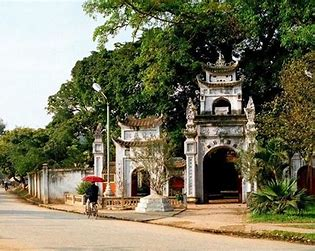
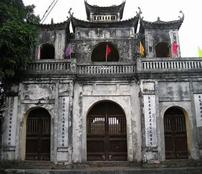
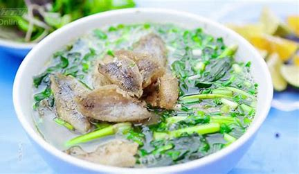
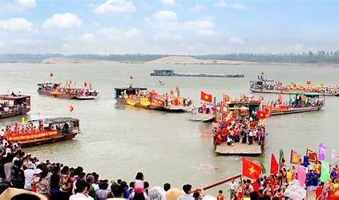

Giới thiệu về Hưng Yên
Trải qua những thăng trầm cùng lịch sử đất nước và qua nhiều lần điều chỉnh địa giới hành chính, đến nay Hưng Yên có diện tích tự nhiên 930,22 km2, với dân số trên 1,2 triệu người. Hưng Yên có vị trí địa lý thuận lợi cho phát triển kinh tế - xã hội; nằm ở trung tâm đồng bằng sông Hồng, trong vùng kinh tế trọng điểm Bắc Bộ và tam giác kinh tế Hà Nội - Hải Phòng - Quảng Ninh; tiếp giáp với Thủ đô Hà Nội và các tỉnh: Hà Nam, Hải Dương, Thái Bình và Bắc Ninh. Có 10 đơn vị hành chính cấp huyện gồm: thành phố Hưng Yên, thị xã Mỹ Hào, 08 huyện (Kim Động, Ân Thi, Tiên Lữ, Phù Cừ, Khoái Châu, Yên Mỹ, Văn Lâm, Văn Giang); trong đó có 14 phường, 08 thị trấn và 139 xã. Trung tâm hành chính của tỉnh đặt tại thành phố Hưng Yên nằm cách thủ đô Hà Nội 64 km về phía đông nam, cách thành phố Hải Dương 50 km về phía Tây Nam. Thôn Vân Nội, xã Hồng Tiến, huyện Khoái Châu là quê hương của bà Hoàng Thị Loan - thân mẫu Chủ tịch Hồ Chí Minh.
Lịch sử và Văn hóa
Tỉnh Hưng Yên được thành lập vào năm Minh Mạng thứ 12 (năm 1831), Vào thế kỷ XVI - XVII, vùng đất Hưng Yên được biết đến qua địa danh Phố Hiến với câu ca “Thứ nhất Kinh kỳ, thứ nhì Phố Hiến”, là thương cảng nổi tiếng một thời, lớn nhất Đàng Ngoài, có hoạt động buôn bán, giao thương sầm uất với nhiều nước trên thế giới và nhanh chóng trở thành chốn phồn hoa đô hội - một tiểu Tràng An. Hưng Yên cũng là một vùng đất địa linh, nhân kiệt, giàu truyền thống hiếu học, tôn sư trọng đạo, ý chí vượt khó t Suốt chiều dài lịch sử dựng nước và giữ nước của dân tộc, vùng đất Hưng Yên thời nào cũng có những hào kiệt, danh nhân văn hóa trên nhiều lĩnh vực. Trong huyền sử, có Chử Đồng Tử được phong thánh trong “Tứ bất tử” theo tâm thức dân gian nước ta. Gần 10 thế kỷ khoa bảng dưới thời phong kiến Việt Nam (1075 - 1919), Hưng Yên có 8 trạng nguyên trong tổng số 53 trạng nguyên của cả nước; 205 tiến sỹ được ghi danh trên bia Văn miếu Quốc Tử Giám - Hà Nội, 228 người đỗ đại khoa được ghi danh ở Văn miếu Xích Đằng - Hưng Yên. Trong lĩnh vực quân sự có Triệu Quang Phục, Phạm Ngũ Lão, Nguyễn Thiện Thuật, Hoàng Hoa Thám… Văn học có Nguyễn Trung Ngạn, Đoàn Thị Điểm, Vũ Trọng Phụng; mỹ thuật có Tô Ngọc Vân, Dương Bích Liên; y học có Đại danh y hải Thượng Lãn Ông Lê Hữu Trác; khoa học có Nguyễn Công Tiễu, Phạm Huy Thông… Trong sự nghiệp đấu tranh giải phóng dân tộc có những chiến sỹ Cộng sản kiên trung, nhà cách mạng kiệt xuất như: Đồng chí Tô Hiệu, đồng chí Lê Văn Lương, Trung tướng Nguyễn Bình, nữ Anh hùng Lực lượng vũ trang nhân dân Bùi Thị Cúc, Trần Thị Khang (Vũ Thị Kính)… Trong công cuộc đổi mới do Đảng lãnh đạo có Tổng Bí thư Nguyễn Văn Linh.
Điểm Du lịch
- Hưng Yên là nơi bồi lắng, hội tụ và lan tỏa sự phong phú, độc đáo của vùng văn hoá châu thổ sông Hồng. Toàn tỉnh hiện có 1.802 di tích lịch sử - văn hoá, trong đó 02 cụm di tích và di tích được xếp hạng di tích Quốc gia đặc biệt, 165 di tích và cụm di tích được xếp hạng cấp Quốc gia. Ví dụ như:
- Chùa Chuông
- Đền Trần
- Đền Mẫu
Ẩm thực
Ẩm thực Hưng Yên “ghi điểm” ấn tượng với thực khách nhờ chất lượng cả sắc, hương, vị thơm ngon hài hòa, tinh tế. Vì thế, thưởng thức ẩm thực Hưng Yên không chỉ đơn thuần là cảm nhận hương vị của món ăn mà thưởng thức cả lịch sử, gốc gác quê hương, phong tục tập quán, khí chất riêng biệt của mảnh đất này. Món đặc sản Hưng Yên đầu tiên phải nhắc đến chính là món bún thang lươn. Cũng giống như bún thang Hà Nội, món ăn đậm hương vị đồng quê này được chế biến từ nhiều loại nguyên liệu khác nhau như giò lụa, trứng rán, thịt ba chỉ, bún… nhưng vẫn sở hữu điểm khác biệt đó là ở phần thịt lươn xào lạ miệng. Bún thang lươn như một bức tranh muôn màu bởi nền trắng của bún, màu vàng của trứng gà, màu nâu vàng của lươn, màu trắng ngà của giò lụa, màu vàng béo của thịt ba chỉ kết hợp với màu xanh của rau răm, hành lá. Tất cả được kết hợp với nhau một cách thật hài hòa, tạo nên một “tác phẩm” tuyệt hảo mà ít món ăn nào có được. Thế nên, những người con Hưng Yên có dịp trở về thăm quê hay những du khách thập phương đều mong muốn tìm đến thưởng thức hương vị đậm đà của bún thang lươn Phố Hiến, niềm tự hào của người Hưng Yên mỗi khi nhắc đến đặc sản của quê mình.
Sự kiện
Các lễ hội ở Hưng Yên từ lâu luôn là di sản và niềm tự hào của người dân địa phương. Theo thống kê của Bộ Văn hóa, Thể thao và Du lịch thìa toàn tính có đến hơn hàng trăm lễ hội lớn nhỏ, trong đó có rất nhiều lễ hội lớn với nhiều hoạt động đặc sắc. Du lịch Hưng Yên và khám phá các lễ hội độc đáo ở đây là một trong những trải nghiệm tuyệt vời mà du khách chớ nên bỏ lỡ nếu như có cơ hội.
1. Lễ hội đền Phù Ủng
2. Lễ hội Chử Đồng Tử - Tiên Dung
3. Lễ hội văn hóa dân gian Phố Hiến
4. Lễ hội đền Mẫu
5. Lễ hội nhãn lồng
6. Lễ hội đền Kim Đằng